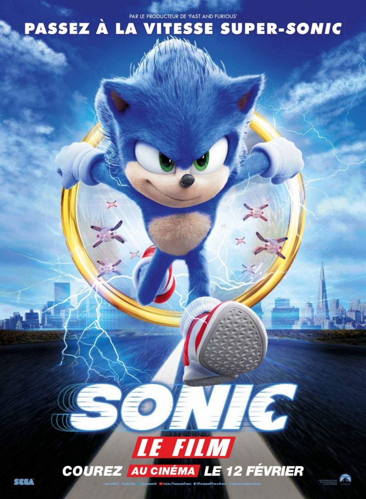
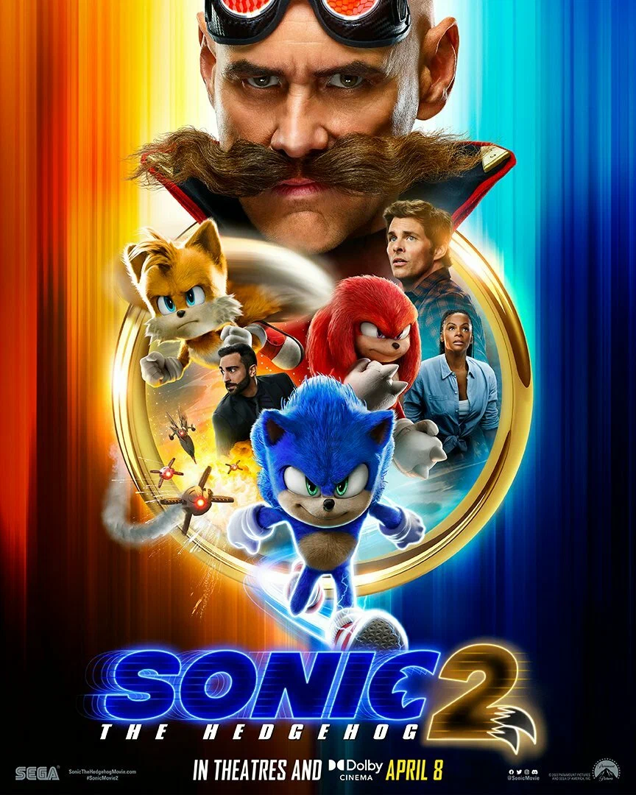
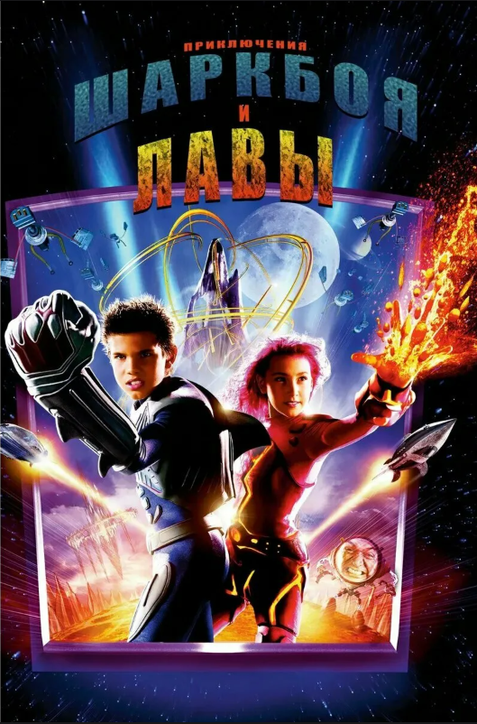
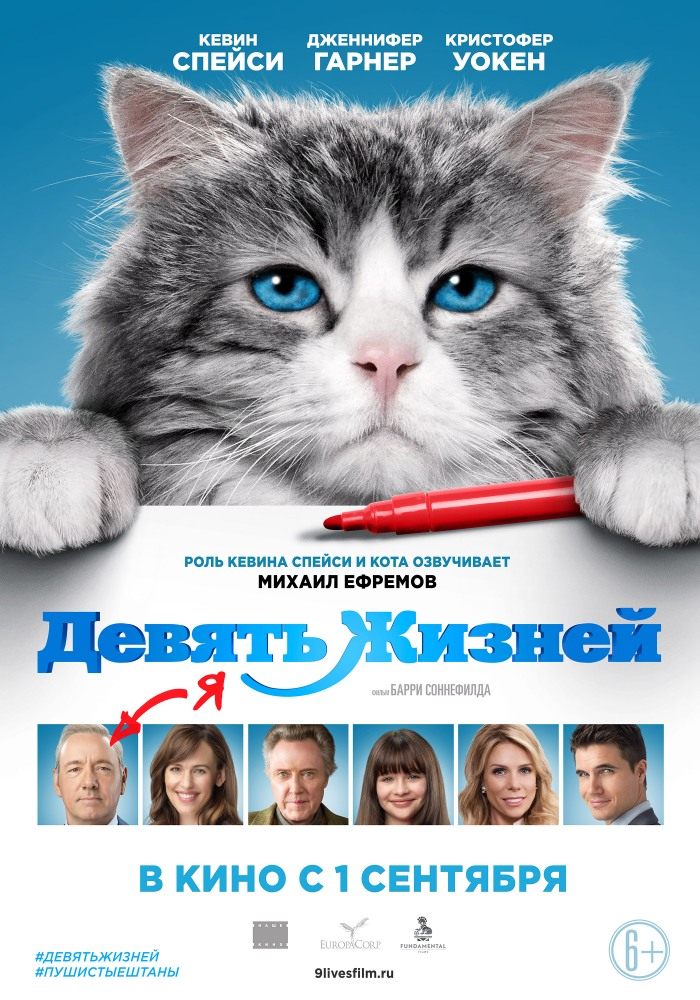

Соник
Отвязный ярко-синий ёжик Соник из параллельного мира вместе с новообретённым лучшим другом-человеком по имени Том знакомится со сложностями жизни на Земле и противостоит злодейскому доктору Роботнику.

Отвязный ярко-синий ёжик Соник из параллельного мира вместе с новообретённым лучшим другом-человеком по имени Том знакомится со сложностями жизни на Земле и противостоит злодейскому доктору Роботнику.

Поселившись в Грин-Хилз, Соник стремится доказать, что у него есть все задатки настоящего героя. Злодейский доктор Роботник вновь строит козни вместе с напарником Наклзом.
Команда предстоит столкнуться с чёрным ёжиком Шэдоу, созданным дедушкой доктора Роботника в рамках эксперимента под названием «Проект Тень».
Мечтающая стать журналисткой Энди получает должность помощницы всесильной Миранды Пристли, деспотичного редактора нью-йоркского журнала мод.

10-летний герой придумывает себе двух несуществующих друзей: мальчика-акулу и девочку-лаву, вместе с которыми пускается в волшебное путешествие.

Бизнесмен-трудоголик обнаруживает себя в теле роскошного кота. Пока он отсыпается в больнице, кот вынужден возвращать любовь семьи, чтобы не остаться питомцем навсегда.
Вы знали, что в фильме "Приключения Шаркбоя и Лавы" в роли мальчика Шаркбоя снимался известный актёр Тейлор Лотнер, который стал более известен благодаря роли Джейкоба Блэка в вампирской саге "Сумерки".